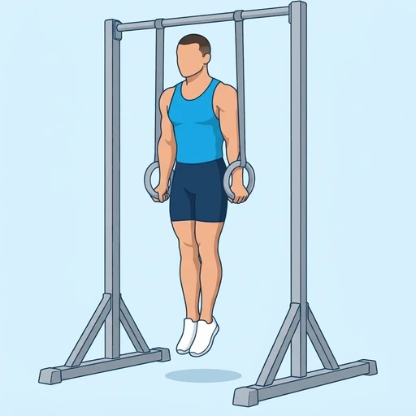

Ring Support Hold
The basic gymnastic rings position: you hold yourself above the rings with your arms locked and your body tall. The unstable rings force the shoulders, chest and triceps to keep the arms steady, and it is the foundation for ring dips and many other ring skills.
Chest · Gymnastic Rings · Intermediate

Muscles worked by the Ring Support Hold
Primary
Secondary
Also called: pec, pecs, pectoralis major, pectoralis, chest muscles, tricep.
Equipment
Also called: gymnastic rings, still rings, wood rings, olympic rings.
How to do the Ring Support Hold
- Hang the rings at about hip height and take one ring in each hand, with your thumbs wrapped around the ring.
- Press up so that your arms are straight and your body is lifted off the floor above the rings.
- Turn your palms slightly outward so the rings sit beside your hips, with your elbows locked.
- Push down on the rings and keep your shoulders away from your ears, with your chest lifted.
- Squeeze your glutes and keep your legs together, with your feet pointed.
- Hold the position for the planned time, then lower down under control.
Form tips
- Keep the rings close to your body and still; any wobble tells you which side needs more control.
- Press the shoulders down and away from the ears instead of letting them shrug up.
- Start with the rings low and your feet on the floor if you cannot hold the position with straight arms.
At a glance
| Body part | Chest |
|---|---|
| Category | Strength |
| Force type | Static |
| Mechanic | Compound |
| Difficulty | Intermediate |
| Equipment | Gymnastic Rings |
| Goals | Strength |
| Tags | Calisthenics, Knee safe, No axial load, Lower back safe, Shoulder stability |
| MET | 6.0 (metabolic equivalent, for calorie estimates) |
| Unilateral | No |
| Bodyweight | No |
| Dataset id | ring-support-hold |
Ring Support Hold in German & Spanish
| German | Ring-Stützhalt |
|---|---|
| Spanish | Soporte Estático en Anillas |
Descriptions, instructions and tips ship in all three languages in the JSON.
Related exercises
Exercise data (JSON)
The record below is exactly what exercises.json ships for this exercise — names, descriptions, instructions and tips in English, German and Spanish.
{
"id": "ring-support-hold",
"name_en": "Ring Support Hold",
"name_de": "Ring-Stützhalt",
"name_es": "Soporte Estático en Anillas",
"description_en": "The basic gymnastic rings position: you hold yourself above the rings with your arms locked and your body tall. The unstable rings force the shoulders, chest and triceps to keep the arms steady, and it is the foundation for ring dips and many other ring skills.",
"description_de": "Die Grundposition an den Turnringen: Du hältst dich mit gestreckten Armen und aufrechtem Körper über den Ringen. Die instabilen Ringe zwingen Schultern, Brust und Trizeps, die Arme ruhig zu halten, und sie sind die Grundlage für Ring Dips und viele andere Ringelemente.",
"description_es": "La posición básica en anillas de gimnasia: te mantienes por encima de las anillas con los brazos bloqueados y el cuerpo erguido. Las anillas inestables obligan a los hombros, el pecho y los tríceps a mantener firmes los brazos, y es la base de los fondos en anillas y de muchas otras habilidades en anillas.",
"category": "strength",
"force_type": "static",
"mechanic": "compound",
"difficulty": "intermediate",
"equipment": "rings",
"body_part": "chest",
"primary_muscles": [
"pectoralis_major",
"triceps_brachii"
],
"secondary_muscles": [
"anterior_deltoid",
"latissimus_dorsi",
"serratus_anterior"
],
"goals": [
"strength"
],
"tags": [
"calisthenics",
"knee_safe",
"no_axial_load",
"lower_back_safe",
"shoulder_stability"
],
"variation_group": "static-hold",
"is_unilateral": false,
"is_bodyweight": false,
"instructions_en": [
"Hang the rings at about hip height and take one ring in each hand, with your thumbs wrapped around the ring.",
"Press up so that your arms are straight and your body is lifted off the floor above the rings.",
"Turn your palms slightly outward so the rings sit beside your hips, with your elbows locked.",
"Push down on the rings and keep your shoulders away from your ears, with your chest lifted.",
"Squeeze your glutes and keep your legs together, with your feet pointed.",
"Hold the position for the planned time, then lower down under control."
],
"instructions_de": [
"Hänge die Ringe etwa auf Hüfthöhe auf und nimm in jede Hand einen Ring, die Daumen um den Ring gelegt.",
"Drücke dich hoch, sodass deine Arme gestreckt sind und dein Körper über den Ringen vom Boden abgehoben ist.",
"Drehe die Handflächen leicht nach außen, sodass die Ringe neben den Hüften sitzen und die Ellbogen gesperrt sind.",
"Drücke die Ringe nach unten und halte die Schultern weg von den Ohren, die Brust angehoben.",
"Spanne das Gesäß an und halte die Beine zusammen, die Füße gestreckt.",
"Halte die Position für die geplante Zeit und senke dich dann kontrolliert ab."
],
"instructions_es": [
"Cuelga las anillas aproximadamente a la altura de la cadera y toma una anilla en cada mano, con los pulgares rodeando la anilla.",
"Empuja hacia arriba hasta que los brazos queden estirados y el cuerpo se despegue del suelo por encima de las anillas.",
"Gira ligeramente las palmas hacia fuera para que las anillas queden a los lados de las caderas, con los codos bloqueados.",
"Empuja hacia abajo sobre las anillas y mantén los hombros alejados de las orejas, con el pecho elevado.",
"Aprieta los glúteos y mantén las piernas juntas, con los pies en punta.",
"Mantén la posición durante el tiempo previsto y luego baja con control."
],
"tips_en": [
"Keep the rings close to your body and still; any wobble tells you which side needs more control.",
"Press the shoulders down and away from the ears instead of letting them shrug up.",
"Start with the rings low and your feet on the floor if you cannot hold the position with straight arms."
],
"tips_de": [
"Halte die Ringe nah am Körper und ruhig; jedes Wackeln zeigt dir, welche Seite mehr Kontrolle braucht.",
"Drücke die Schultern nach unten und weg von den Ohren, statt sie hochzuziehen.",
"Beginne mit tiefen Ringen und den Füßen auf dem Boden, wenn du die Position mit gestreckten Armen nicht halten kannst."
],
"tips_es": [
"Mantén las anillas cerca del cuerpo y quietas; cualquier tambaleo te indica qué lado necesita más control.",
"Empuja los hombros hacia abajo y lejos de las orejas en lugar de dejar que se encojan hacia arriba.",
"Empieza con las anillas bajas y los pies en el suelo si no puedes mantener la posición con los brazos estirados."
],
"met": 6.0,
"images": {
"flat": {
"main": "images/flat/ring-support-hold-main.webp"
}
}
}Fetch just this exercise
const { exercises } = await fetch(
"https://exercise-dataset.com/exercises.json"
).then(r => r.json());
const ex = exercises.find(e => e.id === "ring-support-hold");Free for personal and commercial in-app use with attribution (“Exercise data by RepDB”) — see the license and ready-made attribution snippets. Redistributing the data as a dataset or API is not permitted.